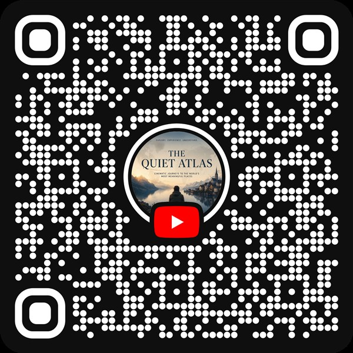

01
Go beyond
the postcard.
Look deeper into overlooked cities and border regions that rarely make the standard tourist recommendations.
Walk beyond the tourist shortcuts. Discover overlooked borderlands, storied avenues, and quiet European dawn streets — filmed at a contemplative walking pace with immersive ambient sound.
Hello & welcome • Cześć & witajcie na moim kanale! 🇵🇱
CINEMATIC SHORT · 9:16 PROMO
A quiet immersion into forgotten borders, storied avenues, and the contemplative feeling of being there.
Most travel channels rush through tourist highlights. We slow down to notice architectural textures, changing weather, and the subtle character of ordinary streets.
Recorded with high-fidelity spatial binaural sound. Hear cobblestones underfoot, distant church bells, port gulls, and the gentle rhythm of city life.
From twin cities divided by international borders to historic trade highways, we walk the lines where cultures, histories, and everyday lives intersect.
“The most memorable journeys are measured by the stories we discover and the connections we make along the way.”
Join The Channel ↗A DIFFERENT WAY TO SEE
The Quiet Atlas is dedicated to slow travel on foot — capturing the soul of a city, the quiet poetry of a forgotten alley, and the unexpected moment waiting just around the corner.
From divided border towns on the Oder and Neisse rivers to the post-industrial red-brick courtyards of Łódź and royal routes of Warsaw, every journey invites you to travel a little slower and look a little closer.
Browse the video archiveLook deeper into overlooked cities and border regions that rarely make the standard tourist recommendations.
Explore at walking pace. When you slow down, the small architectural and human details become the journey’s true story.
Discover where geography, changing borders, architectural layers, and living memories converge across Poland and Europe.
THE VIDEO JOURNAL
Six in-depth walking journeys to begin with.
Many more places to discover.
THE JOURNEYS, MAPPED
Every marker corresponds to a published walking journey. Click any destination to inspect the walk.
TAKE THE ATLAS WITH YOU
Whether you are exploring from your phone or sharing the channel with your local community.

Point your smartphone camera at the QR code to open @theQuiet_Atlas directly in your YouTube app and subscribe with a single tap.
High-resolution printable companion designed for bulletin boards, indie bookshops, travel clubs, and cultural cafes.
YOUR NEXT DISCOVERY STARTS HERE
Come along for the walk. Discover a new borderland, notice something unexpected, and let the journey unfold one story at a time.
Subscribe to join me and explore the world one story at a time. Dziękuję!